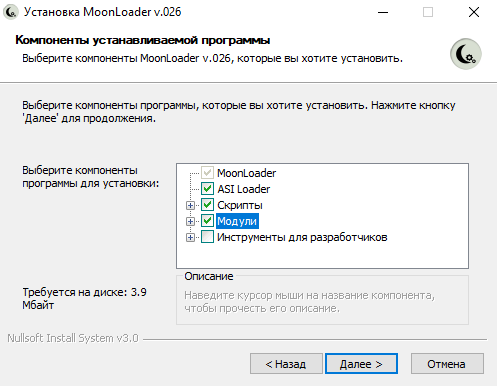

Для установки скриптов желательно иметь чистую версию GTA San Andreas.
Чистая Steam версия с вырезанными audio (1,03 ГБ):
Яндекс.Диск / Google Disk
Установить SA:MP 0.3.7 R1: Скачать с официального сайта
Именно эту версию, так как если версия будет выше, то SAMPFUNCS работать не будет, а при запуске будет запускаться одиночная игра.
Установить MoonLoader v.026: Скачать
Запустить установщик, галочки установить как на скриншоте и нажать "Далее":
Указать папку с игрой и нажать "Установить".
Если в ходе установки возникает ошибка при загрузке компонентов, то необходимо установить модули вручную: Скачать
Содержимое архива (папку samp) копировать в папку moonloader/lib.
Установить SAMPFUNCS 5.4.1 (рекомендуется): Скачать
Файл SAMPFUNCS.asi перенести в папку с игрой.
Установить CLEO 4.3: Сайт
Запустить установщик, выбрать "русский" язык, нажать "далее", указать путь к папке с игрой и подтвердить нажатием на "далее", галочки оставить как есть, нажать "далее", затем "установить".
Как только всё выше будет установлено, необходимо скачать нужный вам скрипт с главной страницы сайта, открыть архив и содержимое перенести в папку с игрой.